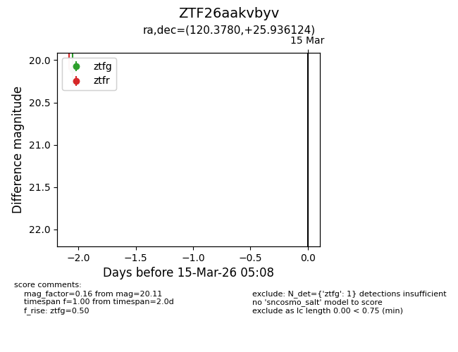
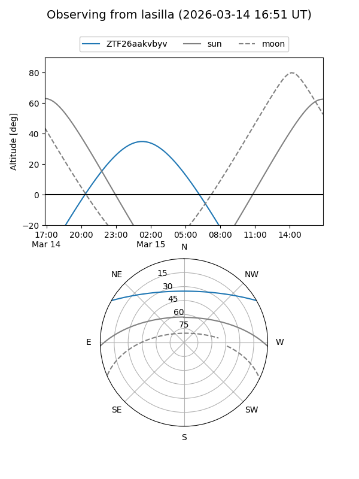
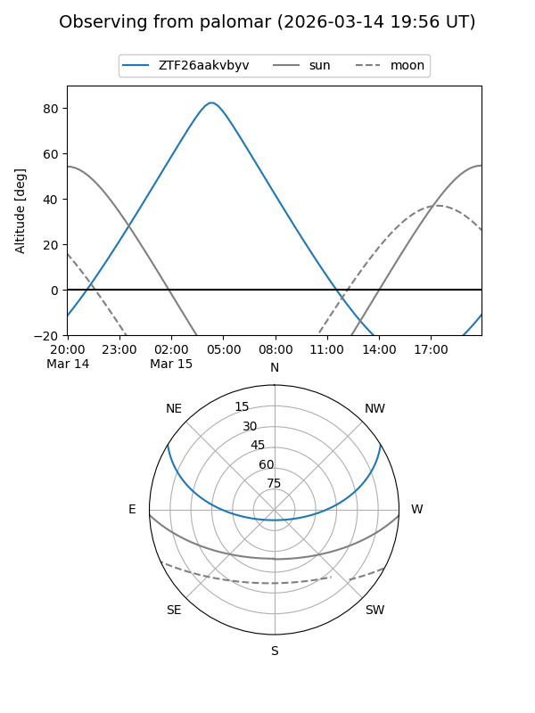

ZTF26aakvbyv
Target ZTF26aakvbyv at 2026-03-15 05:10
Aliases and brokers:
FINK: link
Lasair: link
ALeRCE: link
alt names
ZTF26aakvbyv (ztf,fink_ztf)
Coordinates:
equatorial (ra, dec) = 120.3780,+25.93612
equatorial (HMS+DMS) = 08:01:30.73,+25:56:10.05
galactic (l, b) = (195.7102,+26.12624)
Flags:
Photometry:
last ztfg=20.11
1 ztfg detections
Lightcurve

Visibility


Additional plots